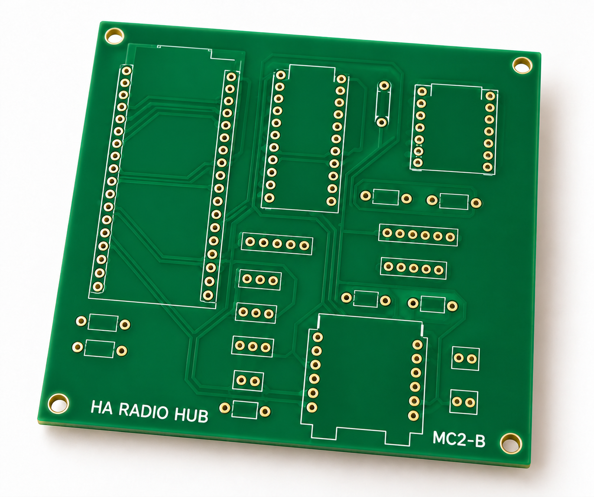

HA Radio Hub — MC2-C
Three independent external antennas: Zigbee, Thread and Bluetooth. MC2 keeps a local classic-ESP32 Thread Border Router, Ember Zigbee coordinator, active BLE proxy, Z-Wave, 433 MHz RF, LD2450 and BME680 behind one Ethernet uplink. Its 100 × 100 mm carrier holds finished modules with direct-solder male headers.

Generated from the current enclosure geometry with simplified electronic bodies, including TinyC6[D] and the RECOM power assembly. Use the full-hub CAD layout, print files and wiring guide for construction. Antennas and most cables are omitted for visibility; connect the required antennas before operation.
Engineering prototype. Source builds and CAD checks are not measurements of coverage, power consumption, mechanical fit or radio certification. The 1,000 ft² house coverage target still requires testing.
Start building
Follow Start here for the ordered build, success checks, Home Assistant connections and troubleshooting. Program the loose boards before permanent assembly. The current hardware is MC2-C + FH1; older revisions are kept as references.
For readable pages, searchable wiring and print downloads, clone or download this repository and run from its root:
python3 tools/preview.py
This opens the local build guide in a browser; no Python packages are needed.
Alternatively, open guide/index.html from the downloaded
folder. GitHub shows HTML source rather than running this guide. Use
--port 0 if the default local port is occupied.
Start here · Versioned engineering build package · Print package — all STLs and quantities · Pin-to-pin harness CSV · Documentation index

Selected hardware
Buying parts? The MC2 shopping guide gives quantities, exact order codes, inspected AliExpress variants and outstanding availability checks. MC2-C selects the available TinyC6[D] / TC6D-01 and its matching external-antenna firmware. The manufacturer showed 48 in stock at USD $18 on 19 October 2026. Use the PCB ordering record for the current fabrication package and five-board prototype recommendation.
- Espressif ESP32-DevKitC-VIE / ESP32-WROVER-IE: previous-generation host with a factory external antenna connector, 8 MB flash and 8 MB physical PSRAM (4 MB directly addressable, quad 40 MHz); Ethernet host and active BLE 4.2 proxy.
- Unexpected Maker TinyC6[D] / TC6D-01: Thread RCP, 8 MB flash, native USB and header-accessible recovery pins. MC2-C firmware verifies the external U.FL antenna selection through the onboard I²C expander. Solder its two supplied male headers; no battery, extra female headers or RF rework.
- Seeed XIAO MG24: Ember NCP with explicit external-antenna firmware.
- WIZnet WIZ850io: shared-SPI Ethernet; retain the isolated PoE splitter and regulated low-voltage supply from the battery-fed PoE switch.
- RECOM R-78K3.3-1.0: the peripheral 5 V → 3.3 V converter, replacing Pololu D24V22F3. It connects to the existing J2 harness, with a local input capacitor and a new removable mount. The MC2-C copper and firmware stay the same. Power connections and limits.
- Three TE ANT-2.4-LCW-SMA antennas and three Taoglas CAB.618.E cables: separate 50 Ω paths, standard SMA bulkheads, no combiner. The updated selection saves $74.43 on three cables; use the FH1-MC2-C-PWR1 enclosure and fit coupon.
Classic ESP32 retains the configured services and three active BLE connections, but does not support BLE 5 extended advertising or Coded PHY. Lower power consumption has not been established. See the host migration for the cost comparison, memory limits and compatibility checks.
The WK2132 bridge, ZAC93, band-matched CC1101/433.92 MHz antenna, radar, environment sensor and power modules connect to the carrier by harnesses. The carrier BOM and antenna BOM accompany the assembly guide; neither is a complete single-box shopping list on its own. The full assembly inventory includes these modules, the selected finished PoE splitter and the power/cable accessories.


Earlier MC2-B appearance concept only. MC2-C's exact silkscreen and geometry come from the CAD drawing above. AI-generated traces, pads and labels are not fabrication data. Image provenance and prompts.
Where the Z-Wave board and other parts go
Zooz ZAC93 sits in its own removable insulated cradle beside the MC2-C carrier. Its underside 2×5 socket connects by a wired mating header to carrier J4; the DFR0627 / WK2132 bridge connects to J3 and provides its serial port. The ZAC93 does not plug into the ESP32 or a Raspberry Pi in this build. Keep its stock antenna clear of straps, cables and metal.

Current CAD assembly with simplified component bodies. Earlier AI appearance concepts remain in the historical image record; use the current numbered CAD plan for module and cable placement.

The FH1 full-hub enclosure has a 215 × 215 × 78 mm main shell, dedicated mounts for the carrier, ZAC93, UART bridge, CC1101, PoE splitter and 3.3 V buck, and a restrained DC-adapter/fuse tray. LD2450 mounts behind the room-facing lid window. BME680 has a ventilated pod attached outside the warm shell with an air gap. Three independent 2.4 GHz bulkheads remain on the fixed base.
Exploded CAD and print files · Complete assembly and ZAC93 pin mapping · Graphical wiring

The smaller power assembly
The isolated PoE splitter supplies 5 V. The RECOM R-78K3.3-1.0 supplies 3.3 V only to the peripherals, through J2. Its 27 µF input capacitor and insulated wire links fit on a 24 × 24 mm perfboard in the new PWR1 holder. Print the matching PWR1 base and holder together. No second custom PCB order is needed. The converter and capacitor total $4.38, before shipping and tax, versus $26.95 for the previous converter; see the dated shopping record.

Power and capacitor wiring · Perfboard: component and solder sides · Assembly and power checks


Build and inspect
- Native CAD, schematic and connector map.
- Firmware builds and initial programming.
- Verified-target network update workflow.
- Full-hub printable parts, component mounts and connector fit coupon.
- Digital verification and remaining physical checks.
- RF commissioning procedure and results sheet.
The largest print is 215 × 215 mm, within the selected TRONXY XY-3's nominal 310 × 310 × 330 mm print volume. The 65 mm adjacent antenna pitch and 150 mm coax routes still require physical fit and coexistence tests. Module heights, mating plugs, the existing CC1101 variant and printed tolerances must be checked against the delivered hardware. Digital geometry checks do not establish physical fit. The earlier carrier-only enclosure remains a historical option, not the full-hub housing.
MC2-A (S3) is preserved in a Git snapshot, and MC1 remains a regression target; see the engineering history. MC1's Nano/H2 firmware, 16 MB partition table and compact enclosure do not fit MC2. The design registry identifies the one active revision. Do not mix images, pin maps or prices between revisions.
Project information
Repository settings are managed by terraform-github-ha-homelab. No private network keys, learned household RF codes or installation credentials are distributed. See infrastructure, security, license and third-party notices.
Run python3 tools/check.py for offline document/source checks. Hardware,
firmware and mechanical guides list their reproducible validation commands.